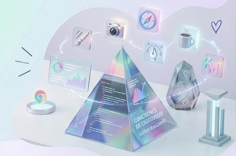
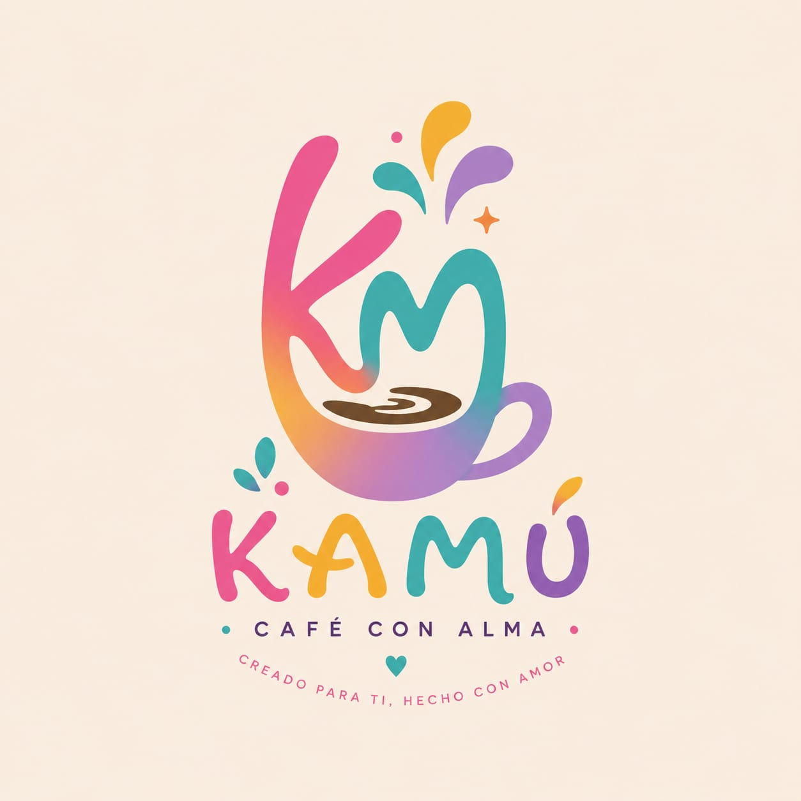
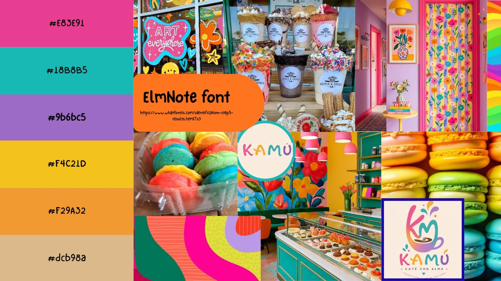

Licenciatura en Comercio Electrónico
Universidad Autónoma de Aguascalientes (UAA)
2025 - ActualidadMi experiencia
Gracias a cada proyecto, reto y aprendizaje, me han formado como la profesional que soy. Aqui te comparto un poco de mi experiencia y trayectoria en el mundo del diseño web.

He tenido la oportunidad de trabajar en diversos proyectos. Cada experiencia me ha permitido desarrollar habilidades técnicas y creativas, así como aprender a colaborar eficazmente con equipos multidisciplinarios.
Creacion de sitios web de interfaces y de usuarios.
Apoyo en redes sociales, de contenido y diseño gráfico.
Desarrollo de mateiales digitales y apoyo en proyectos de diseño.
FORMACION ACADEMICA
Mi formación académica ha sido fundamental para adquirir los conocimientos y habilidades necesarias en el campo del diseño web. A través de mis estudios, he aprendido a combinar la creatividad con la tecnología para crear experiencias digitales impactantes.
Universidad Autónoma de Aguascalientes (UAA)
2025 - ActualidadCursos y proyectos personales en HTML y CSS.
2023 - ActualidadCurso de estrategias digitales, redes sociales y branding.
2022Herramientas con Canva, Figma y Adobe Illustrator.
2021 - 2022PROYECTOS PERSONALES
Ademas de lo academico y profesional, tambien me gusta desarrolar proyectos para mi uso personal donde puedo usar mi creatividad, experimentar y llevar mis ideas a la realidad.

Mi portafolio como diseñadora web, en el muestro mi experiencia, proyectos y habilidades.

Desarrollo de identidad visual y propuesta digital para mi emprendimiento.

Colecciones de inspiracion para proyectos de diseño, redes y contenido creativo.